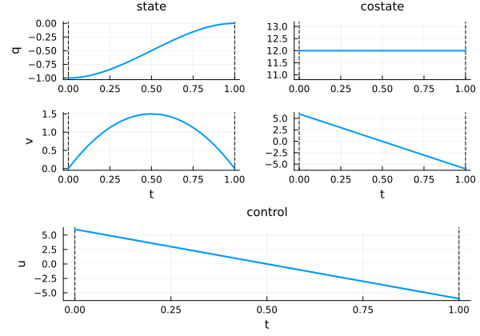
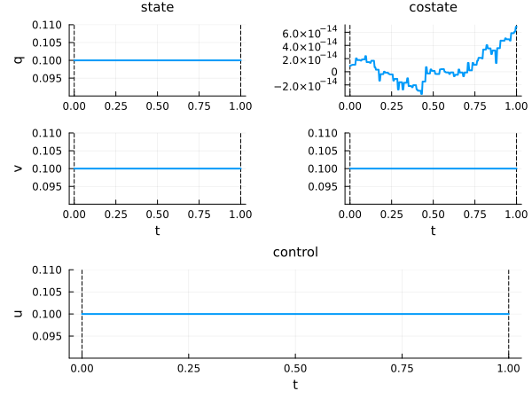
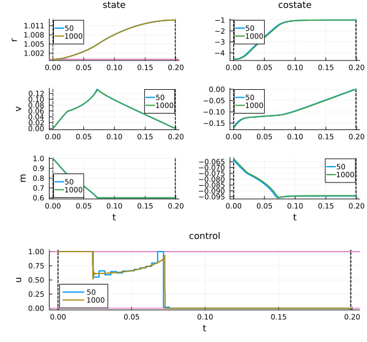
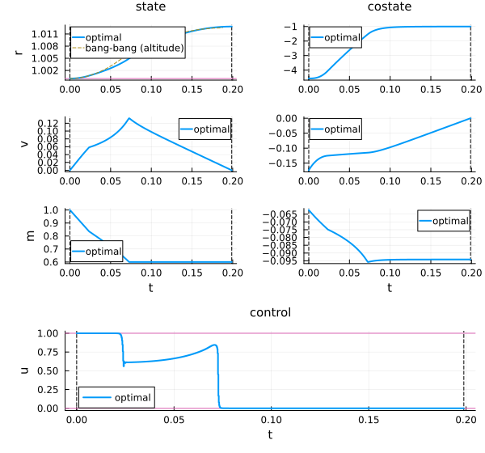
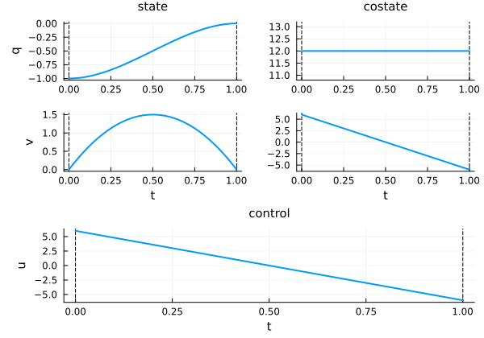
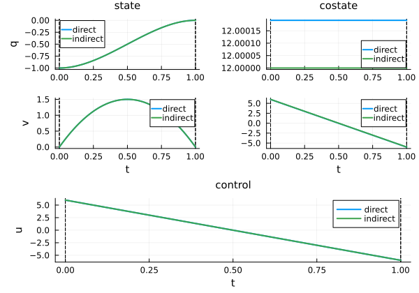

OptimalControl.jl — a guided tour
This tutorial is a guided tour of OptimalControl.jl, part of the control-toolbox ecosystem. We follow two problems end to end: a simple double integrator for modelling, initialisation and the indirect (Pontryagin) method, and the Goddard rocket for the direct method in depth, grid continuation and GPU solving. Advanced topics are linked at the end.
It is written for readers with a background in optimal control, ODEs or optimisation. By the end you will be able to define an optimal control problem, solve it by both the direct and indirect methods, and visualise the result — all in a few lines of code.
You can run this tutorial interactively in your browser — no installation required — by clicking the Binder badge below:

The problem, and installing the tools
An optimal control problem (OCP) in Bolza form reads
\[J(x, u) = g(x(t_0), x(t_f)) + \int_{t_0}^{t_f} f^{0}(t, x(t), u(t))\,\mathrm{d}t \;\to\; \min,\]
subject to the controlled dynamics $\dot{x}(t) = f(t, x(t), u(t))$ and, possibly, box / path / boundary constraints. When $g = 0$ the cost is of Lagrange form; when $f^0 = 0$, of Mayer form.
More generally, the times $t_0$ and $t_f$ may be free (optimisation variables), and a vector $v$ of additional parameters can enter the cost, dynamics and constraints. The full problem then reads
\[\min_{x,u,v}\; g(x(t_0), x(t_f), v) + \int_{t_0}^{t_f} f^{0}(t, x(t), u(t), v)\,\mathrm{d}t,\]
subject to $\dot{x}(t) = f(t, x(t), u(t), v)$, box / path / boundary constraints.
OptimalControl.jl is the core of the control-toolbox ecosystem, a modular suite of Julia packages — CTBase (base types & exceptions), CTParser (DSL parsing), CTModels (problem data structures), CTDirect (discretisation & NLP transcription), CTFlows (Hamiltonian flows for indirect methods), and CTSolvers (solver orchestration) — that can also be used individually.
Installation is a single package:
import Pkg
Pkg.add("OptimalControl")We load OptimalControl.jl to model the problem, a solver backend (NLPModelsIpopt.jl), and Plots.jl.
using OptimalControl
using NLPModelsIpopt
using PlotsDefining a problem: @def and the macro-free API
Our running example: a wagon of unit mass on a frictionless rail, state $x = (q, v)$ (position, velocity), acceleration controlled by a force $u$. We start at $(-1, 0)$, must reach $(0, 0)$ at $t_f = 1$, and minimise the transfer energy $\tfrac12\int_0^1 u^2$.
t0 = 0; tf = 1; x0 = [-1, 0]; xf = [0, 0];The @def macro
The @def macro lets us write the problem almost exactly as the mathematics:
ocp = @def begin
t ∈ [t0, tf], time
x = (q, v) ∈ R², state
u ∈ R, control
x(t0) == x0
x(tf) == xf
ẋ(t) == [v(t), u(t)]
0.5∫( u(t)^2 ) → min
endAbstract definition:
t ∈ [t0, tf], time
x = ((q, v) ∈ R², state)
u ∈ R, control
x(t0) == x0
x(tf) == xf
ẋ(t) == [v(t), u(t)]
0.5 * ∫(u(t) ^ 2) → min
The (autonomous) optimal control problem is of the form:
minimize J(x, u) = ∫ f⁰(x(t), u(t)) dt, over [0, 1]
subject to
ẋ(t) = f(x(t), u(t)), t in [0, 1] a.e.,
ϕ₋ ≤ ϕ(x(0), x(1)) ≤ ϕ₊,
where x(t) = (q(t), v(t)) ∈ R² and u(t) ∈ R.
Each line of the @def block mirrors a piece of the mathematical formulation — time, state, control, dynamics, boundary conditions, then cost — in the same order one would write them on paper. Unicode symbols (∈, R², ẋ, ∫, →) make the code read like the maths; plain ASCII alternatives (in, R2, der, integral, to) are available for keyboards or workflows that prefer them.
The same problem with the macro-free (functional) API
The functional API builds the same model step by step with plain functions — useful for programmatic problem generation or macro-free library code.
pre = OptimalControl.PreModel()
time!(pre; t0=t0, tf=tf)
state!(pre, 2, "x", ["q", "v"])
control!(pre, 1)
function f_energy!(dx, t, x, u, v)
dx[1] = x[2]
dx[2] = u[1]
return nothing
end
dynamics!(pre, f_energy!)
function boundary_energy!(b, x0_, xf_, v)
b[1] = x0_[1] - x0[1]
b[2] = x0_[2] - x0[2]
b[3] = xf_[1] - xf[1]
b[4] = xf_[2] - xf[2]
return nothing
end
constraint!(pre, :boundary; f=boundary_energy!, lb=zeros(4), ub=zeros(4), label=:endpoint)
lagrange_energy(t, x, u, v) = 0.5 * u[1]^2
objective!(pre, :min; lagrange=lagrange_energy)
time_dependence!(pre; autonomous=true)
ocp_func = build(pre)The (autonomous) optimal control problem is of the form:
minimize J(x, u) = ∫ f⁰(x(t), u(t)) dt, over [0, 1]
subject to
ẋ(t) = f(x(t), u(t)), t in [0, 1] a.e.,
ϕ₋ ≤ ϕ(x(0), x(1)) ≤ ϕ₊,
where x(t) = (q(t), v(t)) ∈ R² and u(t) ∈ R.
What the macro actually does
Key message: @def translates the expression into the very same functional calls, and additionally records the symbolic definition. We can see the difference directly: the macro keeps the DSL expression, whereas the functional API stores an empty definition.
definition(ocp) # the macro records the full DSL expressionAbstract definition:
t ∈ [t0, tf], time
x = ((q, v) ∈ R², state)
u ∈ R, control
x(t0) == x0
x(tf) == xf
ẋ(t) == [v(t), u(t)]
0.5 * ∫(u(t) ^ 2) → min
has_abstract_definition(ocp_func) # false: functional API stores no abstract definitionfalseTwo remarks are in order. First, in the functional API callbacks every quantity is vector-valued: even when the control is scalar, one writes u[1] — not u — inside f_energy! or lagrange_energy. Second, the functional API currently works only with the :adnlp modeler; it does not support the :exa modeler needed for GPU solving. This is one reason to prefer the @def macro when GPU execution is contemplated — we will come back to this in the GPU section.
First solve, initial guess, and the costate
Solving is one call, plotting another.
direct_sol = solve(ocp)• Solver:
✓ Successful : true
│ Status : first_order
│ Message : Ipopt/generic
│ Iterations : 1
│ Objective : 6.000096001536038
└─ Constraints violation : 2.220446049250313e-16
• Boundary duals: [12.000192003072058, 6.0000960015360265, -12.000192003072058, 6.000096001536031]
plot(direct_sol)
The default initial guess
With no initial guess, every variable is initialised to 0.1. We can see the initial guess without optimising, by stopping the solver immediately with max_iter=0:
sol_init = solve(ocp; init=nothing, max_iter=0, display=false)
plot(sol_init; size=(600, 450))
Notice the right-hand column: the costate is already there. Even though we only ever provide the state, control and (optional) variable, the solver initialises the adjoint internally. After optimisation, this right-column costate is exactly the adjoint $p$ of Pontryagin's Maximum Principle — the same $p$ we will reuse to start the indirect method in the indirect section. This closes the loop between the direct and indirect methods.
Providing our own initial guess
The recommended way to provide an initial guess is the @init macro, using the labels from the @def block (q, v, u here):
ig = @init ocp begin
q(t) := -1 + t
v(t) := 0
u(t) := 0
end
sol = solve(ocp; init=ig, display=false)
println("iterations, default guess: ", iterations(direct_sol))
println("iterations, @init guess: ", iterations(sol))iterations, default guess: 1
iterations, @init guess: 1In this case both guesses give 1 iteration: the double integrator is a linear-quadratic problem, so the NLP is quadratic and Ipopt solves it in a single step regardless of the starting point. Warm-starting only pays off on genuinely nonlinear problems — we will see this with the Goddard rocket in the next section.
For all the ways to specify an initial guess, see Set an initial guess. Note that there is currently no way to initialise the costate directly — only state, control and variable can be provided through @init. The solver initialises the adjoint internally (as we saw above). Costate initialisation is a planned feature.
The direct method in depth: the Goddard problem
The direct method turns the infinite-dimensional OCP into a finite-dimensional nonlinear program (NLP) by discretising time (Runge–Kutta / collocation) on a grid, then hands the NLP to a solver. It is robust and easy to use.
Concretely, time is discretised on a uniform grid $t_0 < t_1 < \dots < t_N = t_f$ with step $h = (t_f - t_0)/N$. The (explicit) Euler scheme, for instance, replaces the dynamics by
\[x_{i} = x_{i-1} + h\,f(t_{i-1}, x_{i-1}, u_{i-1}), \quad i = 1, \dots, N,\]
and the integral cost by the corresponding rectangle sum $h\sum_{i=0}^{N-1} f^{0}(t_i, x_i, u_i)$. The continuous OCP thus becomes a finite-dimensional NLP in the variables $X = (x_0, \dots, x_N, u_0, \dots, u_N)$, which is passed to an NLP solver such as Ipopt. Higher-order schemes (midpoint, Gauss–Legendre collocation) follow the same principle with different quadrature and interpolation formulas — solve defaults to the second-order :midpoint scheme, not Euler.
To demonstrate convergence behaviour and warm-starting, we need a genuinely nonlinear problem. The Goddard rocket — maximise the final altitude, with free final time and a singular arc — is a classic test case.
# Goddard data and dynamics (F0: drift, F1: thrust)
const r0 = 1; v0 = 0; m0 = 1; mf = 0.6
Cd = 310; Tmax = 3.5; β = 500; b = 2
F0(x) = begin
r, v, m = x
D = Cd * v^2 * exp(-β * (r - 1))
[v, -D/m - 1/r^2, 0]
end
F1(x) = begin
r, v, m = x
[0, Tmax/m, -b*Tmax]
end
goddard = @def begin
tf ∈ R, variable
t ∈ [t0, tf], time
x = (r, v, m) ∈ R³, state
u ∈ R, control
x(t0) == [r0, v0, m0]
m(tf) == mf
0 ≤ u(t) ≤ 1
r(t) ≥ r0
ẋ(t) == F0(x(t)) + u(t) * F1(x(t))
r(tf) → max
endAbstract definition:
tf ∈ R, variable
t ∈ [t0, tf], time
x = ((r, v, m) ∈ R³, state)
u ∈ R, control
x(t0) == [r0, v0, m0]
m(tf) == mf
0 ≤ u(t) ≤ 1
r(t) ≥ r0
ẋ(t) == F0(x(t)) + u(t) * F1(x(t))
r(tf) → max
The (autonomous) optimal control problem is of the form:
minimize J(x, u, tf) = g(x(0), x(tf), tf)
subject to
ẋ(t) = f(x(t), u(t), tf), t in [0, tf] a.e.,
ϕ₋ ≤ ϕ(x(0), x(tf), tf) ≤ ϕ₊,
x₋ ≤ x(t) ≤ x₊,
u₋ ≤ u(t) ≤ u₊,
where x(t) = (r(t), v(t), m(t)) ∈ R³, u(t) ∈ R and tf ∈ R.
Choosing a solver is trivial
solve uses the defaults (collocation, ADNLP modeler, Ipopt, CPU). Switching solver is just loading a package and passing a token (see Solve a problem):
using MadNLP
sol_ipopt = solve(goddard; grid_size=250, display=false)
sol_madnlp = solve(goddard, :madnlp; grid_size=250, display=false)
println("Ipopt : r(tf) = ", objective(sol_ipopt), ", ", iterations(sol_ipopt), " iters")
println("MadNLP : r(tf) = ", objective(sol_madnlp), ", ", iterations(sol_madnlp), " iters")Ipopt : r(tf) = 1.0128374184916846, 95 iters
MadNLP : r(tf) = 1.0128372815654052, 28 itersThe available methods and their options can be inspected with methods() and describe(:collocation); we will not dwell on them here.
Grid continuation by warm-starting
A solution can be passed directly as the initial guess of another solve — it is interpolated onto the new grid. This makes discrete continuation trivial and ties back to the initialisation above. On this nonlinear problem it genuinely pays: we compare reaching a fine grid of 1000 two ways —
- cold start — solve
grid_size=1000directly; - cascade — solve
grid_size=50first, thengrid_size=1000warm-started with that solution.
using BenchmarkTools
# solutions computed once, reused for iteration counts and the overlay plot
sol_cold = solve(goddard; grid_size=1000, display=false)
s50 = solve(goddard; grid_size=50, display=false)
s1000 = solve(goddard; grid_size=1000, init=s50, display=false)
# timings — BenchmarkTools handles JIT warm-up and reports the minimum
t_cold = @belapsed solve($goddard; grid_size=1000, display=false) samples=3 seconds=10
t_cascade = @belapsed begin
a = solve($goddard; grid_size=50, display=false)
solve($goddard; grid_size=1000, init=a, display=false)
end samples=3 seconds=10
println("cold grid 1000 : ", iterations(sol_cold), " iters, ", round(t_cold; digits=3), " s")
println("cascade grid 50 (warm-up): ", iterations(s50), " iters")
println("cascade grid 1000 (warm) : ", iterations(s1000), " iters, ", round(t_cascade; digits=3), " s total")cold grid 1000 : 186 iters, 10.524 s
cascade grid 50 (warm-up): 57 iters
cascade grid 1000 (warm) : 13 iters, 1.089 s totalMessage: what matters is the iteration count at the expensive grid — the warm-started iterations(s1000) is well below the cold iterations(sol_cold), even though the cheap grid_size=50 warm-up adds iterations of its own to the running total; since a grid-50 iteration is far cheaper than a grid-1000 iteration, the cascade still wins on wall-clock time. Overlay the successive solutions to watch convergence:
plt = plot(s50; label="50")
plot!(plt, s1000; label="1000")
This is grid-refinement warm-starting. The very same mechanism drives parametric continuation (homotopy on a physical parameter, e.g. maximum thrust): Discrete continuation.
Comparison with a bang-bang strategy
How much better is the optimal solution compared to a naive strategy? We simulate full thrust until fuel depletion, then coast to apogee — a bang-bang profile with no optimisation, just two ODE integrations with callbacks.
using OrdinaryDiffEq # ODE solver (callbacks for the bang-bang simulation)
# Phase 1: u = 1, stop when m = mf (fuel depleted)
bang1!(dx, x, p, t) = (dx[:] = F0(x) + F1(x))
cb_fuel = ContinuousCallback((u, t, int) -> u[3] - mf, terminate!)
sol_bang1 = solve(ODEProblem(bang1!, [r0, v0, m0], (t0, 100.0)), Tsit5(); callback=cb_fuel, reltol=1e-8, abstol=1e-8)
t1_bang, x1_bang = sol_bang1.t[end], sol_bang1[:, end]
# Phase 2: u = 0, stop when v = 0 (apogee)
bang2!(dx, x, p, t) = (dx[:] = F0(x))
cb_apogee = ContinuousCallback((u, t, int) -> u[2], terminate!)
sol_bang2 = solve(ODEProblem(bang2!, x1_bang, (t1_bang, 1000.0)), Tsit5(); callback=cb_apogee, reltol=1e-8, abstol=1e-8)
tf_bang, rf_bang = sol_bang2.t[end], sol_bang2[1, end]
println("Optimal: r(tf) = ", round(objective(sol_cold), digits=4))
println("Bang-bang: r(tf) = ", round(rf_bang, digits=4), " (t1=", round(t1_bang, digits=2), ", tf=", round(tf_bang, digits=2), ")")Optimal: r(tf) = 1.0128
Bang-bang: r(tf) = 1.0125 (t1=0.06, tf=0.19)The optimal thrust profile uses a singular arc — it does not simply push at the maximum. Overlaying the two trajectories on the altitude–velocity plane makes the difference visible:
# assemble the bang-bang trajectory as (t, r, v, m) for plotting
t_bang = [sol_bang1.t; sol_bang2.t]
r_bang = [sol_bang1[1, :]; sol_bang2[1, :]]
v_bang = [sol_bang1[2, :]; sol_bang2[2, :]]
plt_bang = plot(sol_cold; label="optimal")
plot!(plt_bang, t_bang, r_bang; label="bang-bang (altitude)", linestyle=:dash)
Solving on a GPU (optional in live — expected error here)
Moving to the GPU is a single token, :gpu, which auto-completes to (:collocation, :exa, :madnlp, :gpu). It requires the :exa modeler (hence @def, not the macro-free API — cf. the definition section) plus a CUDA-capable GPU.
In a seminar or on Binder there is usually no functional GPU, so the call is expected to fail — that is the pedagogical point: the :gpu token needs a specific setup. We wrap it in a try/catch so the tour keeps running and shows the raised exception.
using MadNLPGPU
using CUDA
try
global sol_gpu = solve(goddard, :gpu; grid_size=1000)
println("GPU solve succeeded — a functional GPU is available.")
catch e
println("GPU solve failed, as expected without a functional GPU.")
println("CUDA.functional() = ", CUDA.functional())
println("Exception: ", first(sprint(showerror, e), 400))
end┌ Warning: CUDA is loaded but not functional. GPU backend may not work properly.
└ @ CTSolversCUDA ~/.julia/packages/CTSolvers/FGN4F/ext/CTSolversCUDA.jl:29
▫ This is OptimalControl 2.0.4, solving with: collocation → exa → madnlp (gpu)
📦 Configuration:
├─ Discretizer: collocation (grid_size = 1000)
├─ Modeler: exa (backend = CUDA.CUDAKernels.CUDABackend(false, false) [gpu-dependent])
└─ Solver: madnlp (linear_solver = MadNLPGPU.CUDSSSolver [gpu-dependent])
▫ GPU solve failed, as expected without a functional GPU.
CUDA.functional() = false
Exception: CUDA driver not functionalFor the full GPU setup, see Solve on GPU.
The indirect method — back to the simple problem
We now return to the double integrator ocp from the earlier sections. Its shooting has just two unknowns and is initialised by the direct costate above, which makes it ideal to see the indirect method. (The Goddard shooting is a structured multi-arc problem — see the links in the last section.)
In control-toolbox we systematically pair the direct method with the indirect one, based on Pontryagin's Maximum Principle (PMP). With pseudo-Hamiltonian $H(x,p,u) = p\,f(x,u) + p^0 f^0(x,u)$ (normal case $p^0 = -1$), the PMP gives the maximising control in feedback form $u(x,p) = \arg\max_u H$, and the optimal trajectory solves a boundary value problem that we recast as a shooting equation $S(p_0) = 0$.
The indirect method proceeds in three steps:
Maximising control. The PMP yields the control in feedback form $u(x, p) = \arg\max_u H(x, p, u)$. Substituting back gives the maximised Hamiltonian $\mathbf{H}(x, p) = H(x, p, u(x, p))$.
Boundary value problem. The optimal trajectory satisfies the Hamiltonian system $\dot{x} = \nabla_p \mathbf{H}$, $\dot{p} = -\nabla_x \mathbf{H}$, with boundary conditions $x(t_0) = x_0$, $x(t_f) = x_f$.
Shooting function. Let $\varphi_{t_0, x_0, p_0}(\cdot)$ denote the flow of the Hamiltonian vector field from $(x_0, p_0)$. The shooting function $S(p_0) = \pi(\varphi_{t_0, x_0, p_0}(t_f)) - x_f$ — where $\pi(x, p) = x$ projects onto the state — measures the miss at $t_f$. Solving the BVP reduces to finding $p_0$ such that $S(p_0) = 0$.
For the energy problem, $H = p_1 v + p_2 u - u^2/2$, so the maximiser is $u = p_2$.
using OrdinaryDiffEq # ODE solver (Hamiltonian flow)
using NonlinearSolve # nonlinear equations (shooting)
# maximising control in feedback form
u_max(x, p) = p[2]
# Hamiltonian flow of the OCP
φ = Flow(ocp, u_max);
# state projection π(x, p) = x
proj((x, p)) = x
# shooting function
S(p0) = proj(φ(t0, x0, p0, tf)) - xfS (generic function with 1 method)The shooting is initialised with the costate of the direct solution — the very adjoint we highlighted above:
nle!(s, p0, _) = (s[:] = S(p0))
p_of_t = costate(direct_sol) # costate as a function of time
p0_guess = p_of_t(t0) # initial costate from the direct method
prob = NonlinearProblem(nle!, p0_guess)
shooting_sol = solve(prob; show_trace=Val(true))
p0_sol = shooting_sol.u
println("costate p0 = ", p0_sol)
println("shoot S(p0) = ", S(p0_sol))
Algorithm: NewtonRaphson(
descent = NewtonDescent(),
autodiff = AutoForwardDiff(),
vjp_autodiff = AutoReverseDiff(
compile = false
),
jvp_autodiff = AutoForwardDiff(),
concrete_jac = Val{false}()
)
---- ------------- -----------
Iter f(u) inf-norm Step 2-norm
---- ------------- -----------
0 2.40003840e-02 0.00000000e+00
1 1.15085180e-14 2.39051536e-02
Final 1.15085180e-14
----------------------
costate p0 = [12.000000000000133, 6.000000000000043]
shoot S(p0) = [3.853755692201154e-16, -1.1508517954971638e-14]Reconstruct and plot the indirect solution from the flow:
indirect_sol = φ((t0, tf), x0, p0_sol; saveat=range(t0, tf, 100))
plot(indirect_sol)
Overlaying the direct and indirect solutions confirms they match:
plt_compare = plot(direct_sol; label="direct")
plot!(plt_compare, indirect_sol; label="indirect")
See Compute flows from optimal control problems for the flow construction, and the indirect simple shooting tutorial.
Going further (end of the socle)
This is the natural stopping point. From here, the tour branches out — we point to the detailed pages rather than coding them live.
Variables & parameters. Beyond the control, one can optimise parameters naturally, both in an OCP (the variable keyword of the DSL) and in a differential-constraint optimisation problem without any control (a control-free problem). See control-free problems.
Advanced examples (each does both direct and indirect):
- Singular control (control-affine systems) — singular control
- State constraint — state constraint
- Goddard problem — free final time, a singular arc, a state constraint and a structured shooting all at once — Goddard tutorial
Discrete continuation — warm-starting across a family of problems (homotopy on a physical parameter), the grown-up version of the grid continuation above: Discrete continuation.
This page was generated using Literate.jl.